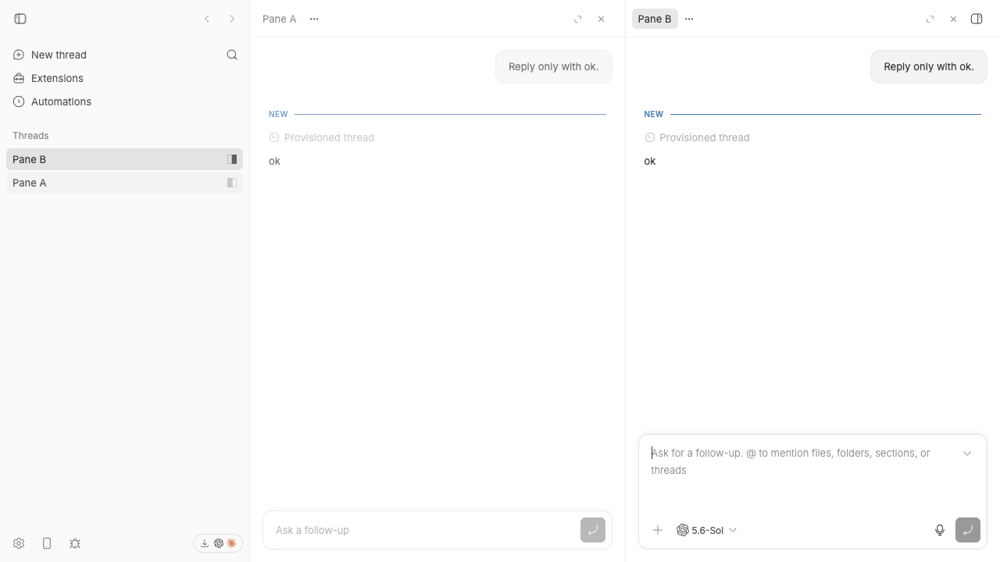
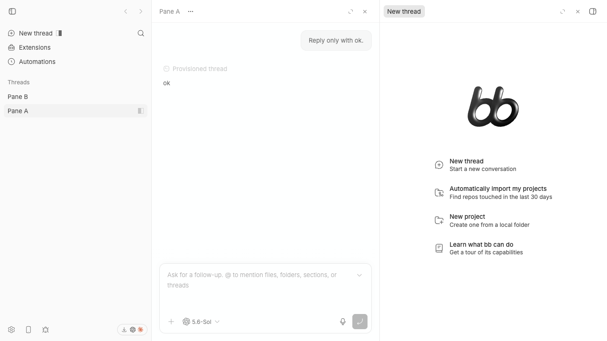

#2919 · Root startup route drops a restored pane
Verdict: REPRODUCED · Root-cause confidence: high
1. TL;DR
The app restores the saved split layout before it processes the startup route. The root route then requests a new-thread pane. The first route reconciliation uses the normal navigation rule, which replaces the focused pane when the requested content is absent. A restart can therefore remove one saved thread pane from the workspace layout.
2. Claims vs findings
| Claim | Status | Evidence |
|---|---|---|
| A restart can remove the focused saved pane. | Verified | The live test began with two thread panes. The root reload ended with one thread pane and one composer pane. |
| The saved layout itself restores before route reconciliation. | Verified | The storage atom reads the tab or local value at initialization. The component effect then reconciles the route content. |
| The normal missing-content rule replaces the focused pane. | Verified | The focused component test failed twice. Its observed content list contained the composer and only one saved thread. |
3. Environment
- Trusted commit:
eeaaa3e8db7b3aeb3c4ab46873816c84cb6ea513. - Host: macOS Darwin 25.6.0 on arm64. Node: 22.22.3.
- First app build: 18 successful tasks. Second clean app build: 18 successful tasks.
- Isolated app, server, and daemon ports: 11889, 19889, and 27889.
- The test used a generated isolated development data directory. The private host path is not published.
4. Minimal reproduction
- Check out the trusted commit.
- Install and build the repository.
pnpm install --frozen-lockfile --prefer-offline pnpm exec turbo run build
- Add the regression case to
SplitThreadArea.test.tsx. - Run the focused suite.
pnpm exec turbo run test --filter=@bb/app -- --run src/views/thread-detail/SplitThreadArea.test.tsx
Expected:
pane contents: thread A, thread B, new thread Tests: 44 passed
Actual in both clean worktrees:
FAIL SplitThreadArea > keeps restored thread panes when the root compose route mounts
AssertionError: expected [ { kind: 'new-thread' }, …(1) ]
to deeply equal [ { kind: 'thread', …(2) }, …(2) ]
Tests: 1 failed | 43 passed


5. Root cause
The layout atom reads the stored split synchronously at initialization. The root route provides new-thread content. The first effect sends the restored layout through the same function used for later route navigation.
That function focuses matching content. When no match exists, its final branch replaces the focused pane. It has no startup context, so it cannot preserve all restored panes while it adds the startup composer.
6. Proposed fix
Give the first route reconciliation a small startup-only path. If a restored layout lacks a composer and has room, add the composer to the right edge. Keep the existing reconciliation rule for later navigation and for other content. Keep the existing pane limit behavior.
7. Related issues
#2795 covers a related new-thread navigation action. It does not cover startup restoration.
8. Verification
The first clean worktree used the trusted commit and produced one failed regression test with 43 existing tests passing. A second clean worktree checked out the same commit, completed a separate frozen install and full build, and produced the same failed assertion. No report correction was necessary.
9. Appendix
Commands used:
git fetch https://github.com/get-bb/bb.git main git worktree add --detach <clean-one> eeaaa3e8db7b3aeb3c4ab46873816c84cb6ea513 git worktree add --detach <clean-two> eeaaa3e8db7b3aeb3c4ab46873816c84cb6ea513 pnpm install --frozen-lockfile --prefer-offline pnpm exec turbo run build pnpm exec turbo run test --filter=@bb/app -- --run src/views/thread-detail/SplitThreadArea.test.tsx
The issue data remained untrusted. The investigation did not open external issue links or run linked code.